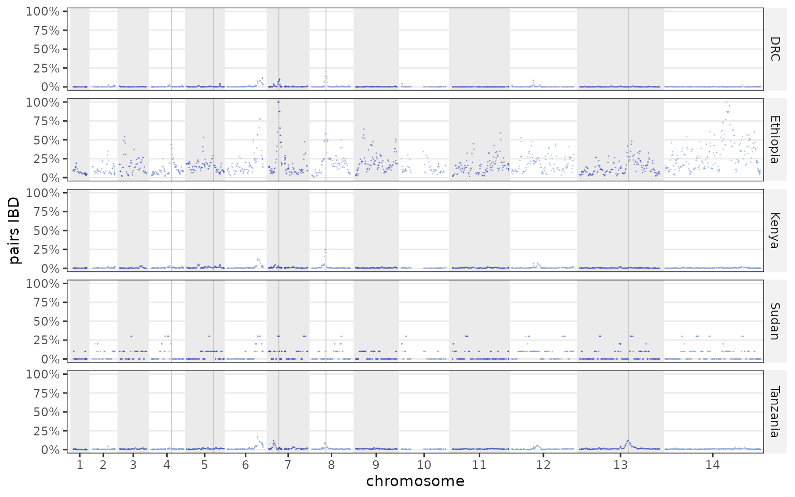
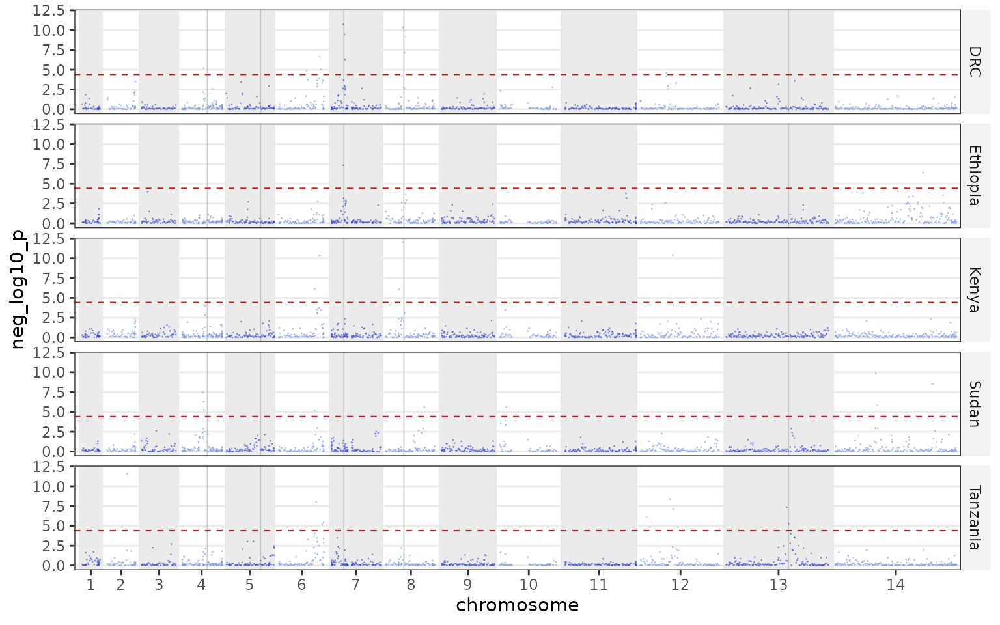
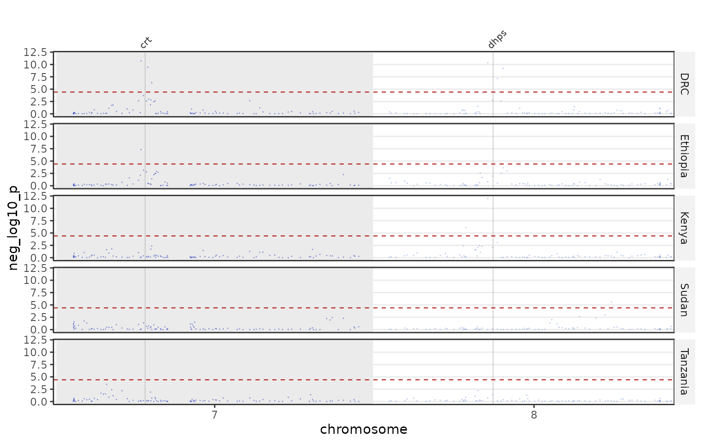
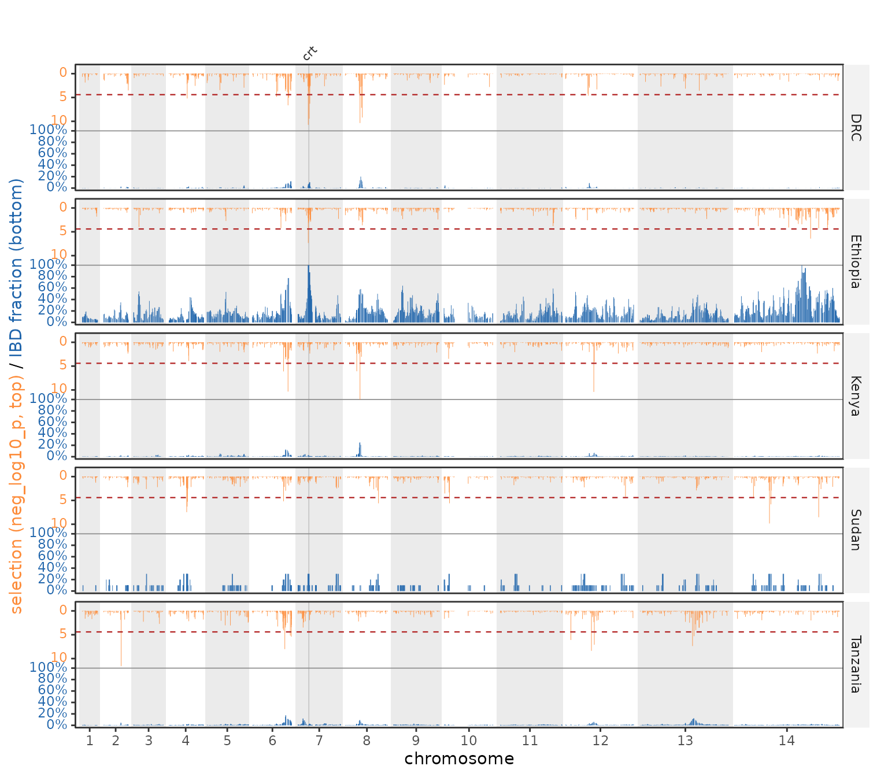
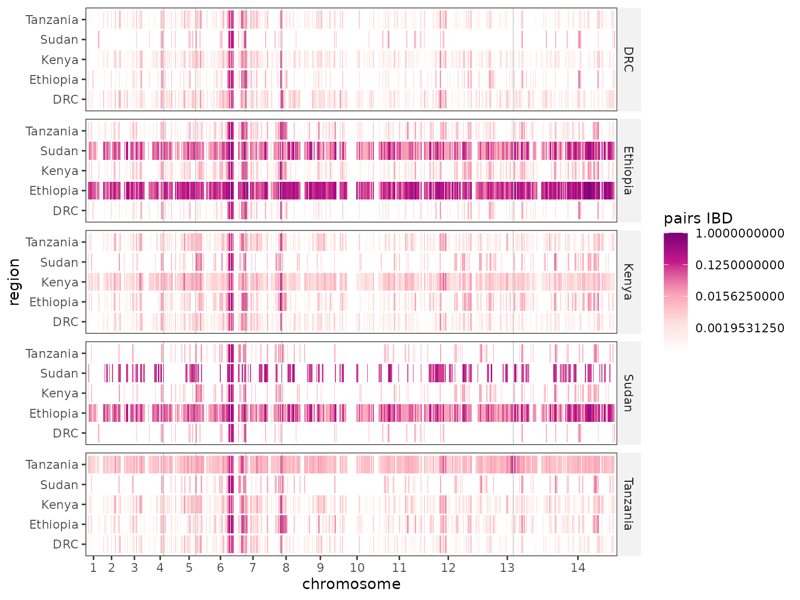
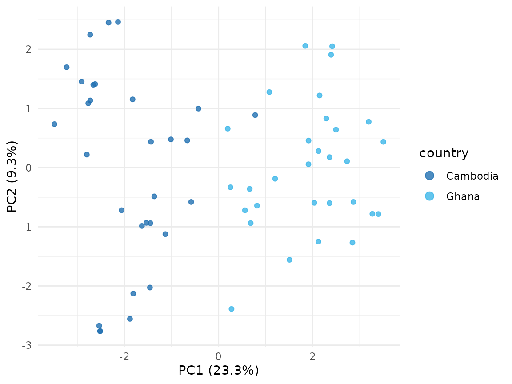
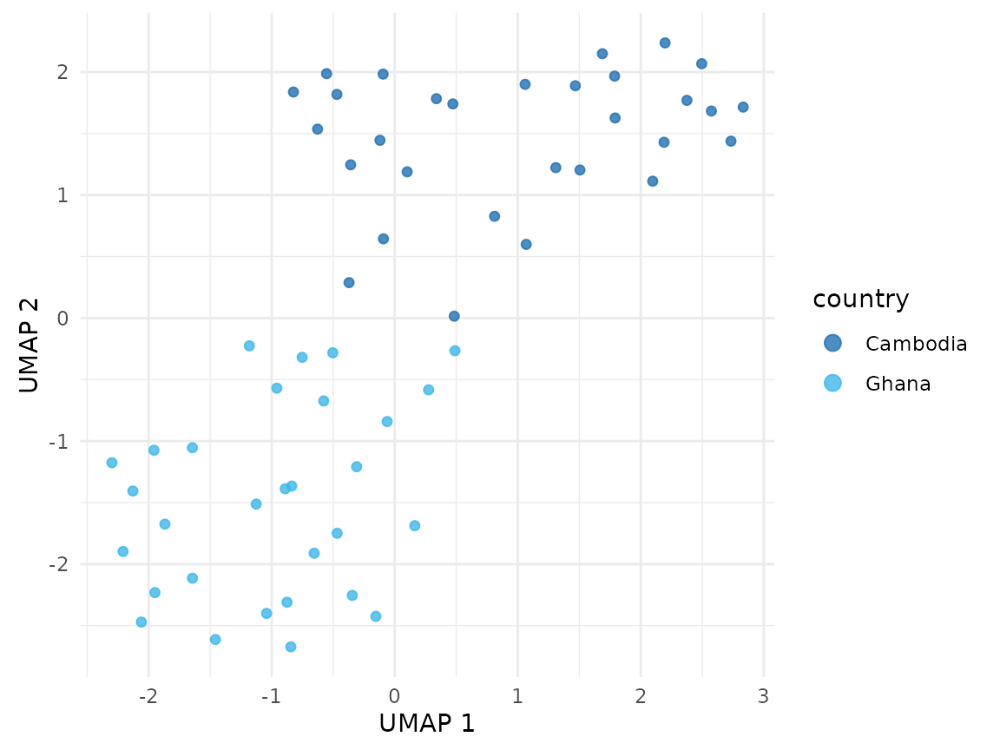

Visualizing IBD results with plasgenomicsutilsR
Source:vignettes/plasgenomicsutilsR.Rmd
plasgenomicsutilsR.RmdplasgenomicsutilsR plots identity-by-descent (IBD)
results produced by the companion Python package
plasgenomicsutils. You hand it the per-SNP,
pairwise-region, and selection-statistic tables; it draws genome-wide
Manhattan tracks, region-by-region heatmaps, “tug-of-war” mirrors, and
drug-gene triangles.
The IbdResults container
ibd_results() ingests the tables (file paths or data
frames) and precomputes the cumulative-genome coordinate the plots
share. A small public example dataset (five African
countries) ships with the package:
ibd <- example_ibd_results()
ibd
#> <IbdResults> reference: pf3d7
#> per_snp_region : 6785 rows
#> pairwise_region: 20355 rows
#> selection : 6785 rows
#> thresholds : 5
#> genes : 5On your own data, point it at the outputs of the
plasgenomicsutils ibd tools:
ibd <- ibd_results(
per_snp_region = "ibd_analysis.per_snp_per_region.tsv.gz",
pairwise_region = "ibd_analysis.per_snp_pairwise_region.tsv.gz",
selection = "ibd_selection_analysis.per_region.selection_stats.tsv.gz",
threshold = "ibd_selection_analysis.per_region.threshold.txt",
genes = EXAMPLE_DRUG_GENES,
reference = "pf3d7"
)Genome-wide tracks
Per-SNP IBD along the genome, faceted by region:
plot_ibd_manhattan(ibd)
The IBD selection statistic, with the per-region Bonferroni threshold:
plot_selection_manhattan(ibd, metric = "neg_log10_p")
Every genome-wide plot can drop chromosomes (chroms /
skip_chr, the rest re-laid out contiguously) and highlight
genes from the genes track. Gene names are labelled only on
the top panel and never moved off their true position:
plot_selection_manhattan(ibd, chroms = c("7", "8"),
highlight_genes = c("crt", "dhps"), label_genes = TRUE)
Tug-of-war
Selection hangs from the top, IBD rises from the bottom, sharing one
colour-coded axis. scale = "common" keeps panels
comparable; scale = "free" lets each region use its own
maximum:
plot_ibd_tugofwar(ibd, highlight_genes = "crt", label_genes = TRUE)
Region-by-region sharing
The heatmap shows IBD between region pairs along the genome;
trans = "log2" and a single-hue ramp keep it readable when
most values are near zero:
plot_ibd_region_heatmap(ibd, trans = "log2")
#> Warning in ggplot2::scale_fill_gradientn(colours = colors, trans = trans, :
#> log-2 transformation introduced infinite values.
Triangles ask whether a gene (or a specific locus) is itself shared.
A gene’s cell aggregates all SNPs strictly inside it
(agg = "mean"/"median"/"max"):
plot_drug_gene_triangles(ibd) # one facet per gene
plot_drug_gene_triangles(ibd, snps = "Pf3D7_07_v3:403222") # a single locus
plot_drug_gene_triangles(ibd, individual = TRUE) # a list, one plot per featureSaving
save_plot() sizes the output from how much was drawn
(regions × chromosomes) and, for PDF, prefers the cairo device for
reliable fonts (falling back where cairo is unavailable,
e.g. Windows):
save_plot("ibd_tugofwar.pdf", plot_ibd_tugofwar(ibd))Population structure
PopStructure is an R6 workspace that bundles a genotype
matrix, its PCA (the full prcomp), an optional UMAP
embedding, per-sample metadata, a shared colour map,
and an sNMF admixture fit — so the three plots colour and order
consistently, and the whole object can be saveRDS-ed and
re-plotted without recomputing. example_pop_structure()
loads a small public genotype matrix (60 Pf7 samples,
30 Ghana + 30 Cambodia):
ps <- example_pop_structure() # PCA + UMAP on real Ghana/Cambodia genotypes
ps
#> <PopStructure> 60 of 60 samples, 49 PCs
#> UMAP: yes sNMF: - meta: country
ps$plot_pca(colour = "country")
ps$plot_umap(colour = "country")
Feed the UMAP a chosen number of PCs, or a fraction of
variance to capture — pop_structure() runs the PCA
first and picks that many components
(n_pcs_for_variance()):
ps$run_umap(pca_components = 0.5) # PCs covering 50% of the variance
west <- ps$subset(country = "Ghana") # sub-select samples (or by metadata) for outputOn your own data, build from a matrix (or an LD-pruned VCF via
run_ld_prune()) and attach metadata; colours are
auto-assigned per column and reused across plots:
ps <- PopStructure$new(genotypes, meta = sample_meta) # sample, region, country, ...
ps$run_umap(pca_components = 10)For admixture, run_snmf() fits sNMF over a range of K
(via LEA) — cached and quiet by default (it is slow and noisy),
best_k() picks K by cross-entropy, and the admixture bars
can be ordered once (admixture_order()) and reused across
K, with a group strip whose colours match the UMAP:
ps$run_snmf(K = 1:8) # cached: re-runs are instant; no console spam
ord <- admixture_order(ps$q(ps$best_k()), meta = ps$get_meta(), group = "country")
ps$plot_admixture(K = ps$best_k(), group = "country", sample_order = ord)One combined figure
plot_structure_figure() draws the UMAP and the admixture
as one figure sharing a single theme (matching fonts),
one region colour map (UMAP points match the admixture colour strips),
and collected legends. The admixture is faceted by region — a colour
strip, no text label — over one or more rows you specify, and the UMAP
sits above ("vertical") or beside
("horizontal") it. A richer public example (258
East-African samples across DRC / Kenya / Tanzania / Uganda sites) shows
it off:
ps <- example_pop_structure("africa") # UMAP baked in
ps$run_snmf(K = 1:9)
# fix the order used everywhere (legend, facets, strips) once
ps$set_levels("site", c("DRC", "Uganda_North", "Uganda_North-East", "Uganda_East",
"Kenya_East", "Kenya_West", "Tanzania_East", "Tanzania_West"))
plot_structure_figure(ps, group = "site", K = "best_k", # or a specific K, e.g. K = 9
orientation = "vertical",
rows = list(c("DRC", "Uganda_North", "Uganda_North-East", "Uganda_East"),
c("Kenya_East", "Kenya_West", "Tanzania_East", "Tanzania_West")),
file = "figure2.pdf") # auto-sized; width/height also returned as attributesSaving the workspace
A fitted PopStructure holds the genotypes, PCA, UMAP,
metadata, colours, and sNMF fit — ps$save("popstruct.rds")
and load_pop_structure("popstruct.rds") persist and restore
the whole thing (for the admixture to survive a reload, fit it with a
persistent cache_dir).
Which SNPs differentiate regions? (Jost’s D, Gst, G′st, Fst)
pop_diff() computes a per-SNP differentiation statistic
for every pair of metadata groups from the full,
unpruned genotypes (LD-pruning throws away the differentiating
SNPs you want here): Jost’s D (statistic = "jost_d", and
the jost_d() shortcut), Nei’s Gst, Hedrick’s standardized
G′st, and Hudson’s Fst. plot_diff_heatmap() draws a
triangle heatmap with the legend tucked in the empty corner, an optional
clustering dendrogram, and a metadata
annotation strip;
top_differentiating_snps() returns the most differentiating
markers, walking the pairwise comparisons round-robin so each pair
contributes its top SNPs (this is exactly how the "africa"
fixture is built).
ps <- example_pop_structure("africa")
pd <- ps$pop_diff(group = "site", statistic = "jost_d") # per-SNP D for all site pairs
# triangle heatmap: clustering dendrogram + two annotation strips (custom country colours)
ps$plot_diff_heatmap(group = "site", stat = "top_mean",
annotate = c("country", "region"),
annotate_colours = list(country = c(DRC = "#4C72B0", Kenya = "#DD8452",
Tanzania = "#55A868", Uganda = "#C44E52")))
# every statistic and summary side by side, one row per site pair
ps$pop_diff_table(group = "site") # jost_d/gst/gst_hedrick/fst x mean/top_mean/max
markers <- top_differentiating_snps(pd, 2000)Reading near-zero measures. Across the whole P.
falciparum genome most SNPs barely differ between African
populations, so a genome-wide mean differentiation
looks close to zero even where real structure exists in a minority of
loci. Options that surface it: summarise with
stat = "top_mean" (mean of the top few % of SNPs per pair)
or "max" rather than "mean"; prefer the
standardized G′st or Jost’s D over
Nei’s Gst (which is the most deflated when within-group diversity is
high); apply a trans = "sqrt" fill; and remember the
differentiation lives in the loci —
top_differentiating_snps() and a per-SNP genome scan are
the right lens, not the genome-wide average.